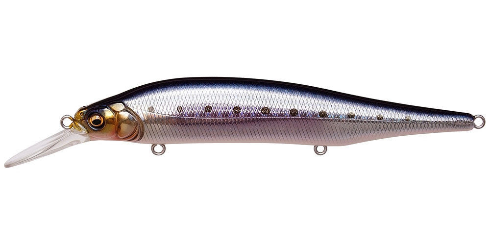
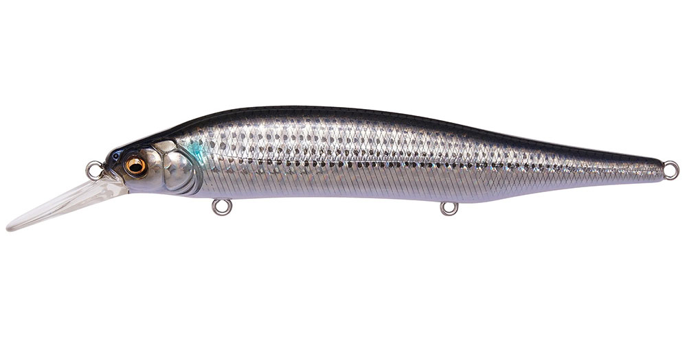
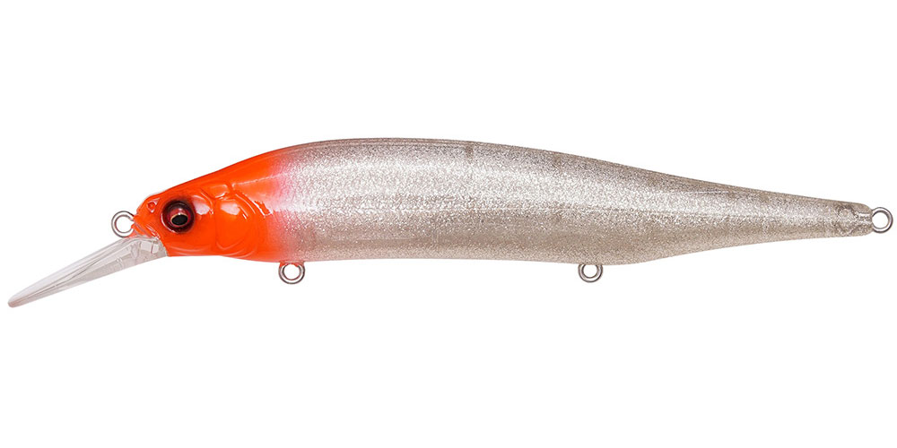
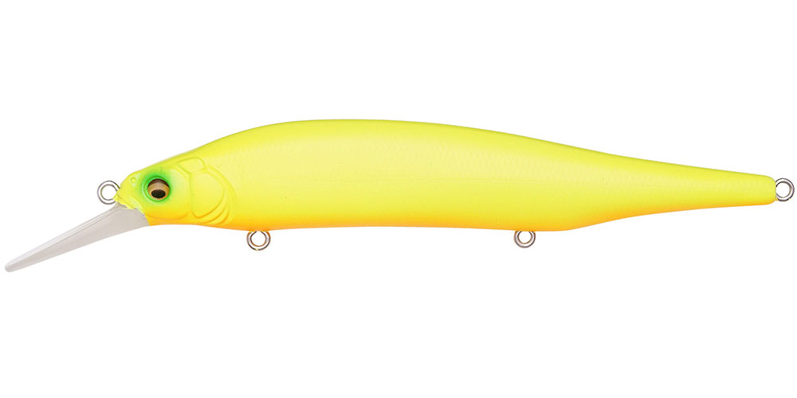

X-80 マグナム＋1
（X-80 MAGNUM+1）
X-80 マグナム＋1はMegabass（メガバス）のソルトミノーです。
世界のソルトシーンで定番となっているX-80シリーズのX-80 MAGNUMをベースに、3m前後のミッドレンジを攻略するために開発されたモデル。急深サーフや足場の高い防波堤、磯、ボートなどから、深場をクルーズするシーバスや青物を狙えます。

画像出典:Megabass公式HP
スペック
- メーカー
- Megabass（メガバス）
- タイプ
- ミノー（シンキング）
- 全長
- 115mm
- 自重
- 18g
- 最大潜行深度
- 2.8m
- フック
- #6×3
- 重心
- トリプル重心移動（小径タングステンバランサー）
- ターゲット
- シーバス・青物
- 価格
- 2,050円（税別）
▼今すぐチェック

X-80 マグナム＋1の特徴
ミッドレンジを攻める、ベイトライクな動きのソルトミノー
-
3m前後のミッドレンジを攻略
X-80 MAGNUMをベースに潜行深度を深くし、最大2.8mまでのミッドレンジを攻められます。
-
ベイトライクな動きと「刺激波動」
極限までベイトライクな動きを追求し、エッジの効いた新たな「刺激波動」を発生させます。
-
トリプル重心移動の飛距離
エアロフォルムのダイビングビルでキャスト時の空気抵抗を減らし、低重心・超高比重の小径タングステンバランサーを「トリプル重心移動」させて、スリムミノーとは思えない飛距離を実現しています。
X-80 マグナム＋1の使い方
基本はただ巻き。カウントダウンでレンジを入れてから巻くと、最大2.8mまでのミッドレンジをキープしやすくなります。
ハイレスポンスなアクションなので、トゥイッチやジャークを入れて、ベイトが逃げるような動きを出すのも効果的です。
X-80 マグナム＋1の得意な状況
急深サーフや足場の高い防波堤、磯、ボートなど、水深のある場所。ベイトを求めて深場をクルーズするシーバスや青物、サワラなどを、表層系のルアーでは届かないレンジで狙いたいときに向いています。
ワンポイント
浅いレンジを攻めたいときは、同じX-80 MAGNUMシリーズのSR（シャローモデル）やオリジナルのMAGNUMもあります。魚のいるレンジに合わせて、潜行深度の違うモデルを使い分けましょう。
ミッドレンジを攻めるミノーの使い分け
| モデル | 全長／自重 | 得意な場面 |
|---|---|---|
| X-80 マグナム＋1 | 115mm／18g | 最大2.8m。ベイトライクな動きでミッドレンジを（本記事のモデル） |
| MDラウドジャーク120S | 120mm／19g | 約3m。ジャーキングとマラカスサウンドで誘う |
| ヴァルナ110SP SW | 113mm／16g | サスペンド。ただ巻き2.1m／連続ジャーク2.8m |
同じミッドレンジでも、ただ巻きのナチュラルな動きで見せたいならX-80 マグナム＋1、ジャーキングで誘うならMDラウドジャーク、止めて見せたいならヴァルナと使い分けましょう。
人気カラー
公式ラインナップから4色を紹介します（カラー名は公式の表記のまま）。

GG IL IWASHIイワシを意識したナチュラルカラー。イワシを追う青物やシーバスに。

GG BORAボラを意識したナチュラルカラー。ボラがベイトの河口や港湾に。

GLX SHINY RED HEADフラッシングとレッドヘッドの定番系。濁りやローライトにも。

DO CHART OBチャート系のアピールカラー。濁りやマズメに。
画像出典:Megabass公式HP
X-80 マグナム＋1に似ているルアー
-
 MDラウドジャーク120S
SHIMANO
詳細はこちら＞
MDラウドジャーク120S
SHIMANO
詳細はこちら＞
全長120mm・自重19gのSW専用ジャークベイト。約3mの一段深いレンジに。
-
 ヴァルナ110SP SW
OSP
詳細はこちら＞
ヴァルナ110SP SW
OSP
詳細はこちら＞
全長113mm・自重16gのサスペンドジャークベイト。同じくらいのサイズで、止めて見せたいときに。
-
 セットアッパー125S-DR
DAIWA
詳細はこちら＞
セットアッパー125S-DR
DAIWA
詳細はこちら＞
全長125mm・自重26gのシンキングダイバー。深いレンジを遠投で探りたいときに。